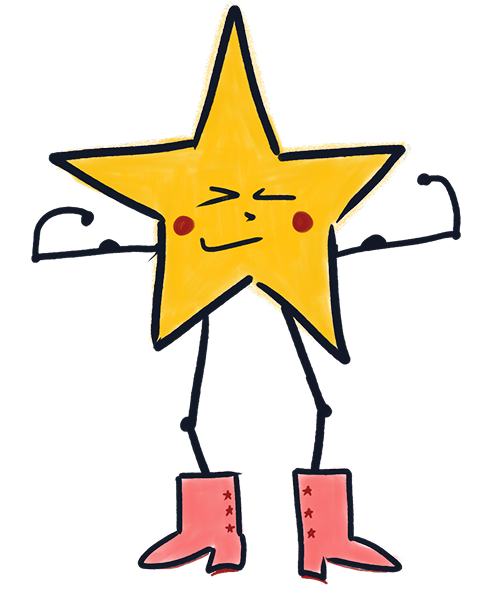

.png)
Our finalists will pitch live to a panel of industry leaders.
MICHAEL SEIBEL
.jpg)
LAURA MODI

ZARNA GARG
Past judges include founders, CEOs, and senior leaders from top technology, media, and consumer companies.
Last year, over 100 students submitted projects.
Only 12 were selected to pitch live.
Each finalist built something that created value in the world: organizations, products, research, and initiatives. Then they pitched it live to industry leaders.
Track Tutoring
Penelope Pressman
(Harvard ’29)
Spencer Kojima
(Princeton '30)
Built: On-demand tutoring platform.
Proof: 100+ tutors across 20+ states.

CULEO
Sloane Lynyak
(10th grade)
Built: Autonomous space debris satellite.
Proof: NASA outreach + published mission concept.

Hearts for Hope
Karys Fan
(8th grade)
Built: Dementia care nonprofit.
Proof: Youth-led program with a national scale plan.

The Forever Bar
Armaan Kapur
(3rd grade)
Built: Waterless soap for water-scarce communities.
Proof: Defended live under investor questioning.

IYK Jewels
Rose Cornell
(11th grade)
Built: Mission-driven jewelry brand.
Proof: $8,000+ revenue donated to charity.

CogniPlay
Lucas Lum
(11th grade)
Built: Deep-learning enabled iPhone app for early Alzheimer's Disease detection.
Proof: 80% accuracy model.

Political Mythmaking Research
Anna Ovchinnikova
(10th grade)
Built: Political parallel thesis on mythmaking.
Proof: Presented findings to professionals in the field.

Safer Surgery: Picasso
Margot Wall
(7th grade)
Built: AI-powered robot for surgical incision.
Proof: Functioning robot arm.

The Cohetes Project
Bo Gardner
(12th grade)
Built: STEM rocketry program for students in rural Guatemala.
Proof: Students built their own rocket launch experiments.

LaunchBox
Sophie Ro
(10th grade)
Built: Hands-on entrepreneurship kits.
Proof: Taught 25+ students business fundamentals.

First Impressions
Harry Nelson
(9th grade)
Built: Youth journal fostering civil discourse.
Proof: Accepting community submissions on an up-and-running website.

Stress and the Microbiome
Priscilla Wong
(7th grade)
Built: Experiment testing effects of stress on health.
Proof: Found that stress leads to a higher chance of illness.

Fashion / Cosmetics
From curious, shy student to feminist fashion icon at Cornell
See how Elise built a platform highlighting female leaders in fashion leading to an internship, published articles, and amassing a following for her platform.
Read Elise's Story

Journalism
Bridging Cultures, Sharing Stories, Inspiring Connections.
Discover how Scarlett is building a global community through compelling interviews and storytelling, highlighting diverse perspectives on music, film, mental health, feminism, and the human experience.
Read Scarlett's Story

Fashion / Cosmetics
From Weekend Crafts to Love Shack Fancy partnership at Age 14
See how Rose transformed her jewelry-making hobby into a profitable accessories brand and generated thousands in profits.
Read Rose's Story

Sports Journalism
From Sneakers to Sports Cards: Building a Thriving Resale Business
See how Max transitioned from sneaker reselling into a profitable sports card business, generating thousands in sales and building a thriving online brand.
Read Max's Story

Coding & Programming
Wins a Congressional App Award
Learn about Drew’s award-winning health app integrating AI and sophisticated data visualization, showcasing technical expertise and creativity.
Read Drew's Story

STEM Project
Launching a Non Profit Advancing Global Health
Josh built a platform advancing global health and advocacy for patients, partnered with local clinics to provide mentorship to 75+ families, and is now headed to UPenn!
Read Josh's Story


.png)
A guided framework students use to turn real work into real proof — and prepare for pitching.


First place: $2,500 · Second place: $2,000 · Third place: $1,000
Our team also provides personalized recommendations for competitions, publications, and awards where students can submit their work next.


Students do not need a Curious Cardinals mentor to participate.
Many choose one to raise the bar on execution, accountability, and storytelling.
Free for students actively working with a Curious Cardinals mentor.
$13 for students not working with a Curious Cardinals mentor.
This helps ensure thoughtful, high-quality submissions.
This is like signing up for a race. How are you planning to run 26.2 miles if you don’t register and put the race date on your calendar? That’s how you get yourself to put in the miles, commit to the work, and actually show up.
Sometimes you just need a finish line.
Register now to receive updates, reminders, and submission guidance.
Submissions Due: May 9.
Pitch Day: May 17.